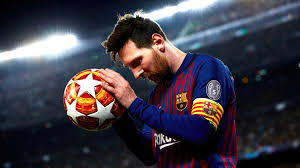

BIOGRAPHY
Lionel Andrés "Leo" Messi[note 1] (Spanish pronunciation:born 24 June 1987) is an Argentine professional footballer who plays as a forward for and captains both Major League Soccer club Inter Miami and the
Argentina national team. Widely regarded as one of the greatest players of all time, Messi has won a record eight Ballon d'Or awards, a record six European Golden Shoes, and was named the world's best player for a record eight times by FIFA.He has won a record 43 trophies in his career. Until 2021, he had spent his entire professional career with Barcelona, where he won a club-record 34 trophies,including ten La Liga titles, seven Copa del Rey titles, and the UEFA Champions League four times. With his country, he won the 2021 Copa América and the 2022 FIFA World Cup. A prolific goalscorer and creative playmaker, Messi holds the records for most goals (474), hat-tricks (36), and assists (192) in La Liga, most appearances (36) and assists (18) in the Copa América. He has the most international goals (108) and appearances (184) by a South American male. Messi has scored over 800 senior career goals for club and country, and the most goals for a single club (672).
Messi relocated to Spain and joined Barcelona aged 13, making his competitive debut at age 17 in October 2004. He established himself as an integral player for the club within the next three years, and in his first uninterrupted season in 2008–09 helped Barcelona achieve the first treble in Spanish football; that year, aged 22, Messi won his first Ballon d'Or. Messi won four consecutive Ballons d'Or, the first player to win it four times. During the 2011-12 season, he set La Liga and European records for most goals in a season, while establishing himself as Barcelona's all-time top scorer. The following two seasons, he finished second for the Ballon d'Or behind Cristiano Ronaldo, his perceived career rival, before
regaining his best form during the 2014-15 campaign, becoming the all-time top scorer in La Liga and leading Barcelona to a historic second treble, and was awarded a fifth Ballon d'Or in 2015. Messi assumed captaincy of Barcelona in 2018, and won a record sixth Ballon d'Or in 2019. He signed for French club Paris Saint-Germain in August 2021, spending two seasons there and winning Ligue 1 twice. Messi joined American club Inter Miami in July 2023, winning the Leagues Cup in August.
CLUB CARRER
At the age of 16 years, four months, and 23 days old, Messi made his first-team debut as a 75th-minute substitute during a friendly against Porto on 16 November 2003.Under Frank Rijkaard, who promoted him to the first team in
October 2004,[33] he made his league debut on 16 October 2004 against Espanyol,[24] and scored his first senior goal on 1 May 2005 against Albacete, from an assist by Ronaldinho, becoming at that time the youngest-ever scorer for the club.
At 17 years, three months, and 22 days old, he was at the time the youngest player to represent Barcelona in an official competition.Messi won the league title in the 2004-05,and 2005-06 season.He won his first Champions League trophy in the 2006 final, although he was ruled out injured.On 10 March 2007, Messi scored his first hat-trick in a
Clásico,the first player to do so in 12 years, equalising after each goal by Real Madrid to end the match in a 3-3 draw in injury time.In Rijkaard's final years at the club, Barcelona finished the 2006–07, and 2007-08 season without trophiesleading to his departure. Messi was given the number 10 shirt for the 2008-09 season.
 During his first season under Barcelona's new manager, former captain Pep Guardiola, Messi played as a false nine for the first time on 2 May 2009 in a Clásico. He scored twice and assisted once in a 6–2 victory, the team's greatest-ever score at Real Madrid's Santiago Bernabéu Stadium.[46][47] He played his first final on 19 May, winning the Copa del Rey.[48] Barcelona became the first club to achieve the sextuple. In addition to the Copa del Rey, Barcelona won the La Liga title and later won the Champions League, Supercopa de España, UEFA Super Cup and FIFA Club World Cup in the second half of 2009.[49][50] Messi finished as the Champions League top scorer, the youngest in the tournament's history,[51] For his efforts in 2009, Messi won the Ballon d'Or and the FIFA World Player of the Year award.[52] In the new year of the 2009–10 season, Messi scored a total of 47 goals in all competitions, equaling Ronaldo's club record from the 1996-97 campaign.
During his first season under Barcelona's new manager, former captain Pep Guardiola, Messi played as a false nine for the first time on 2 May 2009 in a Clásico. He scored twice and assisted once in a 6–2 victory, the team's greatest-ever score at Real Madrid's Santiago Bernabéu Stadium.[46][47] He played his first final on 19 May, winning the Copa del Rey.[48] Barcelona became the first club to achieve the sextuple. In addition to the Copa del Rey, Barcelona won the La Liga title and later won the Champions League, Supercopa de España, UEFA Super Cup and FIFA Club World Cup in the second half of 2009.[49][50] Messi finished as the Champions League top scorer, the youngest in the tournament's history,[51] For his efforts in 2009, Messi won the Ballon d'Or and the FIFA World Player of the Year award.[52] In the new year of the 2009–10 season, Messi scored a total of 47 goals in all competitions, equaling Ronaldo's club record from the 1996-97 campaign.
He finished the season as top scorer in the Champions League,and La Liga, winning his second consecutive league trophy and earned his first European Golden Shoe.In the 2010-11 campaign, Messi won the Supercopa de España,Champions League,and a third consecutive La Liga title. Messi was the top scorer in the Champions League,
for the third consecutive year,and the league's top scorer and assist provider.He became Barcelona's all-time single-season top scorer with 53 goals.
During the 2011–12 season, Messi scored 73 goals and provided 29 assists in all club competitions.He began the campaign winning both the Spanish and European Super Cups trophies.At the close of the year, he won the FIFA Club World Cup and earned the Golden Ball for a second time.For his efforts in 2011, he received the FIFA Ballon d'Or, becoming only the fourth player in history to win the Ballon d'Or three times,and the inaugural UEFA Best Player in Europe Award.During the year 2012, Messi became the second player to be top scorer in four Champions League campaigns.On 20 March, Messi became the top goalscorer in Barcelona's history at 24 years old with a hat-trick against Granada.He finished the season as league top scorer in Spain and Europe for a second time, with 50 goals, a La Liga record, while his 73 goals in all competitions made him the single-season top scorer in the history of European club football.Guardiola resigned that season after a four-year cycle of success.
A double scored on 9 December against Real Betis saw Messi becoming Barcelona's all-time top scorer in La Liga, and surpassed Gerd Müller's record of most goals scored in a calendar year.[77] At the close of the year, Messi had scored a record 91 goals in all competitions for Barcelona and Argentina.Messi again won the FIFA Ballon d'Or, becoming the only player in history to win the Ballon d'Or four times.